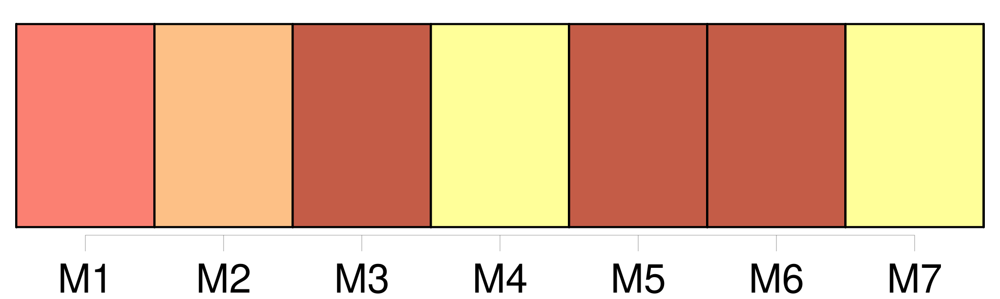

Longueur nb maillons : 10 mentions |
 |
[-Toute association visée au deuxième alinéa de l'article 2-3] peut être inscrite auprès du ministre de la justice, selon les modalités précisées au II du présent article, si [elle] remplit, à la date de [sa] demande d'inscription, les deux conditions suivantes : [1 phrases]
-La demande d'inscription, adressée au ministre de la justice, comprend les documents suivants : [1 phrases] La décision d'inscription ou de refus d'inscription est notifiée à [l'association intéressée] dans un délai de deux mois à compter de la date de délivrance du récépissé. [3 phrases] L'inscription peut être retirée, par décision motivée du ministre de la justice, lorsque [l'association] ne remplit plus les conditions énoncées au I du présent article.
[L'association] est au préalable mise en demeure de présenter [ses] observations. |
|
Il est possible de télécharger la ressource sur la page Ortolang |
Si vous avez des questions ou vous voyez des erreurs, merci d'envoyer un mail à silvia.federzoni89@gmail.com |